제주도
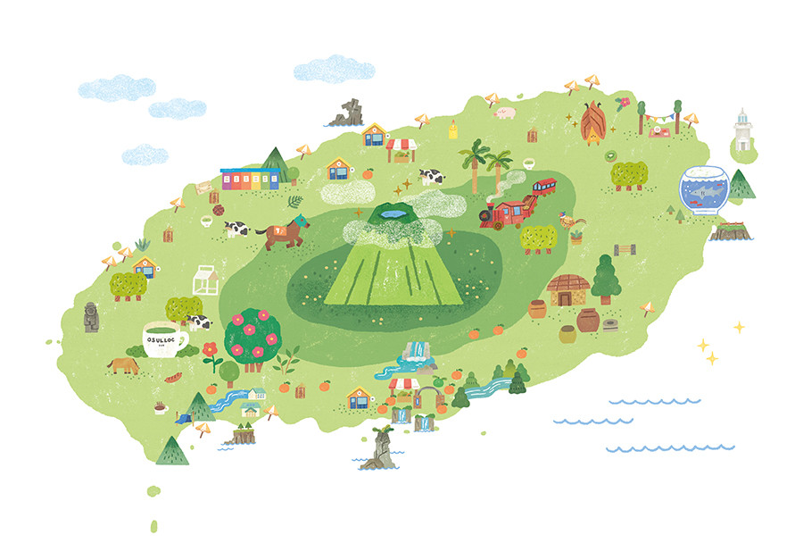
제주도
JEJU Island
제주특별자치도는 대한민국의 제주도와 부속 섬들을 관찰하는 특별자치도로 현재까지 대한민국에서는 제주특별자치도가 유일합니다. 대한민국에서 가장 큰 섬인 제주도 본섬을 비롯하여 마라도, 우도, 추자군도 등을 포함한 유인도 8개, 무인도 55개로 구성되어 있다.
한라산 일대의 아름다운 자연 경관으로 관광업 등 서비스업과 어업이 발달하였고, 제주 화산섬과 용암 동굴은 유네스코 세계 자연 유산에 등재되었다.
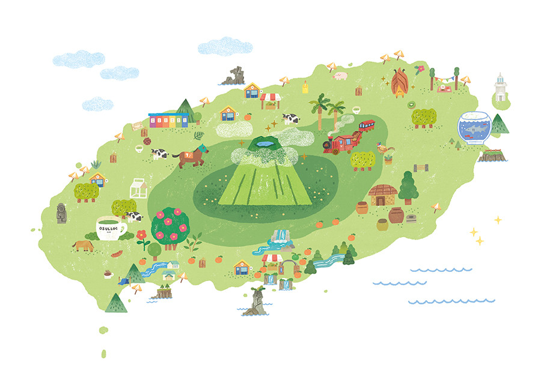
제주도
JEJU Island
제주특별자치도는 대한민국의 제주도와 부속 섬들을 관찰하는 특별자치도로 현재까지 대한민국에서는 제주특별자치도가 유일합니다. 대한민국에서 가장 큰 섬인 제주도 본섬을 비롯하여 마라도, 우도, 추자군도 등을 포함한 유인도 8개, 무인도 55개로 구성되어 있다.
한라산 일대의 아름다운 자연 경관으로 관광업 등 서비스업과 어업이 발달하였고, 제주 화산섬과 용암 동굴은 유네스코 세계 자연 유산에 등재되었다.
우도
Udo Island
우도(牛島)는 제주도의 동쪽 끝에 접하는 섬으로,
제주특별자치도에서 제주도 다음으로 큰 섬이다.
우도란 이름은 섬의 모습이 소가 누워 있는 것 같다고 해서 붙여졌다
성산일출봉
Seongsan Ilchulbong Peak
성산일출봉은 제주도의 다른 오름들과는 달리 마그마가 물속에서 분출하면서 만들어진 수성화산체다. 화산활동시 분출된 뜨거운 마그마가 차가운 바닷물과 만나면서 화산재가 습기를 많이 머금어 끈끈한 성질을 띄게 되었고, 이것이 층을 이루면서 쌓인 것이 성산일출봉이다.
정상에 오르면 너비가 8만여 평에 이르는 분화구를 볼 수 있는데, 분화구 둘레에 99개의 고만고만한 봉우리(암석)이 자리하고 있다. 이 모습이 거대한 성과 같다고 해서 '성산', 해가 뜨는 모습이 장관이라 하여 '일출봉'이라는 이름이 붙었다.
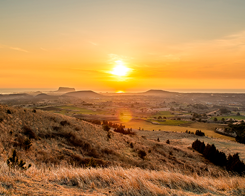
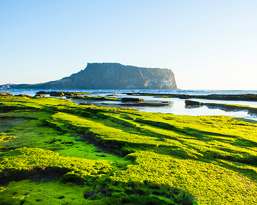

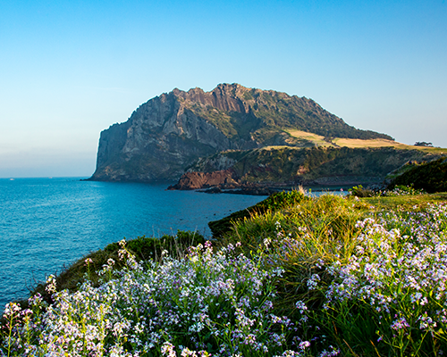
섭지코지
Seopjikoji
제주 동부 해안에 볼록 튀어나온 섭지코지는 성산 일출봉을 배경으로한 해안 풍경이 일품이다. 특히 제주의 다른 해안과는 달리 송이라는 붉은 화산재로 되어 있고, 밀물과 썰물에 따라 물속에 잠겼다가 일어서는 기암괴석들은 어디에서도 볼 수 없는 자연의 수석 전시회를 연출한다.
섭지코지의 섭지란, 재사(才士)가 많이 배출되는 지세라는 뜻이며, 코지는 육지에서 바다로 톡 튀어나온 '곶'을 뜻하는 제주 방언이다. 역사나 과학의 배경지식을 갖고 보면 섭지코지를 더욱 풍부하게 관망할 수 있다.

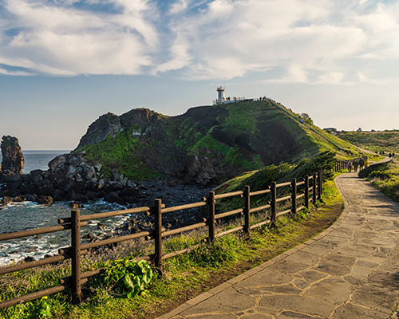
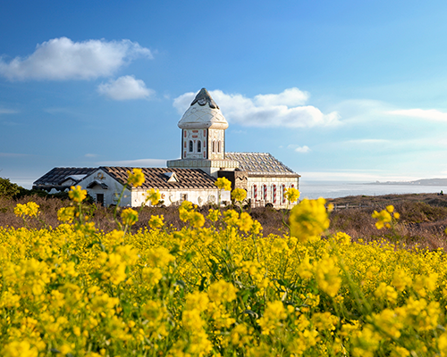
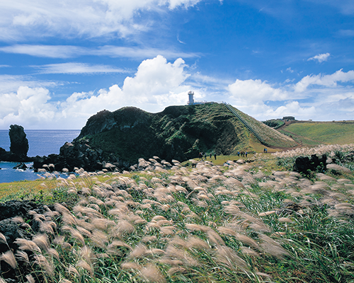
다랑쉬오름
Darangswi uphill
다랑쉬오름은, 산봉우리의 분화구가 마치 달처럼 둥글게 보인다 하여 다랑쉬(도랑쉬, 달랑쉬)라 불렸다는 설과, 높다는 뜻의 '달'에 봉우리의 뜻을 가진 '수리(쉬)'가 합쳐져 불려진 이름이라는 주장이 있다. 유래의 진위 여부를 떠나, 다랑쉬의 모습은 두 가지 설을 다 만족 시킬만한 매력적인 외풍을 가지고 있다.
꼭대기의 분화구는 쟁반처럼 둥글게 패여 달을 떠 올릴만하며, 송당 일대 어디서나 보이는 솟은 봉우리와 균형미는 오름의 여왕이라고 불릴만한 위엄과 아름다움을 가지고 있다.

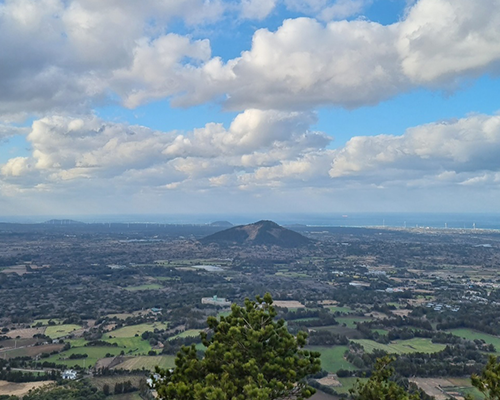
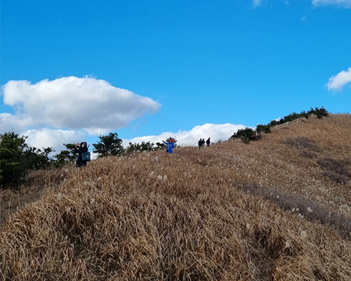
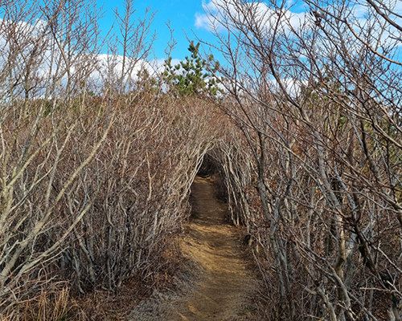
안돌오름(비밀의숲)
Andol Oreum Volcanic Cone
구좌읍 송대천간 도로(1112번 도로) 건영목장입구 주변에서 서쪽 방향으로 바라보면 세 오름이 나란히 있는데, 남서쪽에 있는 안돌오름은 안쪽에 들어앉아 있어서 안돌오름이라 부르고있다. 안돌오름은 북서쪽 봉우리가 정상이고, 남동쪽 봉우리와의 사이에 동쪽으로 골이 패여있는 형태로 말굽형 화구를 이루면서, 화구 안사면의 골이 패인 곳에서만 유일하게 나무가 우거져 자연림의 숲을 이루고 있는 특징을 보이며, 그 외 사면은 매끈한 풀밭 오름이다.
최근 안돌오름은 근처에 위치한 ‘비밀의숲‘으로도 알려져 있다. 해당 명소는 편백나무로 이루어진 개인 사유지로 소액의 입장료를 받고 있다.

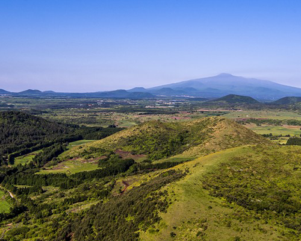
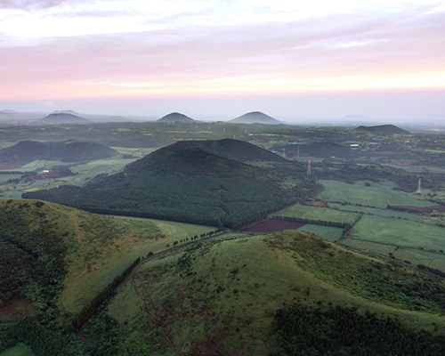
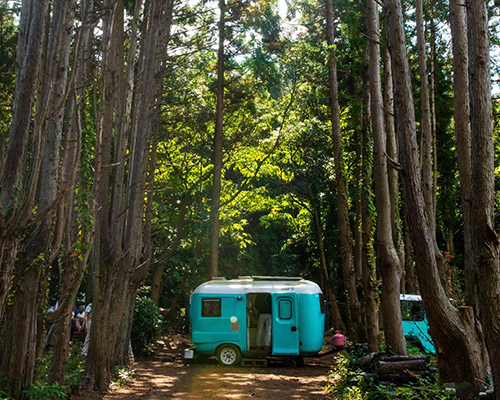
거문오름
Geomun Oreum
숲이 우거져 검게 보여 검은 오름이라 하였다고 전해진다. 제주도의 오름 중 유일하게 유네스코 세계자연유산에 등재되었는데, 이는 거문 오름에서 흘러나온 용암류가 경사를 따라 북동쪽 해안가까지 흘러가면서 지질학적 가치가 높은 화산 지형과 용암 동굴을 만들어 냈기 때문이다.
제주도 자연유산지구 학술조사용역결과에 따르면 선흘리 거문오름 주변에 발달한 동굴의 규모는 용암 동굴로서는 세계적인 수준인 것으로 확인되었다. 거문오름은 북동쪽 산사면이 터진 말굽형 분석구의 형태를 띠고 있으며, 정상에 오르면 거문오름 용암동굴계를 만든 화산의 분화구가 한눈에 보이고, 분화구 안에는 낮게 솟아 오른 작은 봉우리들이 있다.
백약이오름
Baekyaki Oreum
백약이오름은 예로부터 약초가 많이 자생하고 있다고하여 백약이오름이라 불리운다. 둥굴넙적한 분화구(굼부리)형태를 띠고 있으며, 안에는 층층이꽃·향유·쑥·방아풀·꿀풀·쇠무릎 등 약초가 자생하고 있다.
참고로, 해당 관광지에는 근처에 화장실이 없으니 유념하길바란다.
표선해수욕장
Pyoseon Beach
총 면적 25만제곱미터, 백사장 16만 제곱미터에 이르는 표선해수욕장은 백사장이 아름다운 해수욕장으로 유명하다.
표선해수욕장의 넓은 모래콥은 썰물시엔 둥근 백사장처럼, 밀물시엔 수심이 낮은 애매랄드빛 원형 호수처럼 보여 경관이 아름답다. 뿐만 아니라 낮은 수심 때문에 아이들과 물놀이를 즐기기에도 좋은 해수장이다.
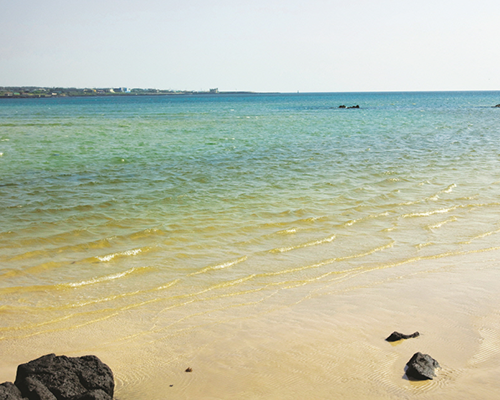

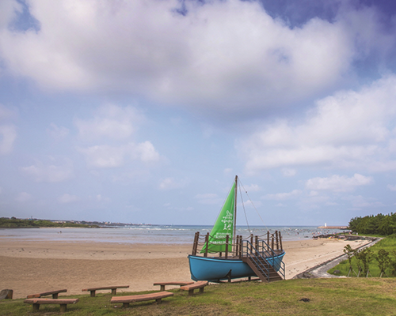
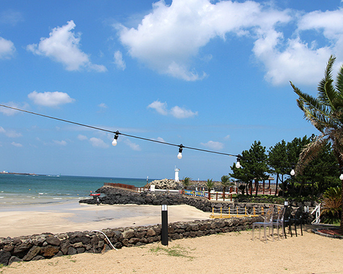
천지연폭포
Cheonjiyeon Waterfall
서귀포 폭포 중에서도 천지연은 하늘과 땅이 만나 이루어진 연못이라는 의미를 담고 있는데, 폭포의 길이 22m, 그 아래 못의 깊이가 20m로, 가히 하늘과 땅이 만나는 연못이라 불린다.
이 숲에 자생하는 담팔수나무는 이곳이 그 북방 한계선으로써 천연기념물 163호로 지정되었고, 난대림 자체도 천연기념물 379호로 지정, 보호되고 있다. 따라서, 벌목, 식물채집, 야생동물 포획이 엄격히 금해진다.
한라산
Hallasan Mountain
지리산, 북한의 금강산과 함께 한반도의 3대 영산에 속하는 한라산은 높이 해발 1,950m로 남한에서 가장 높다. 신생대 제4기의 젊은 화산섬인 한라산은 지금으로부터 2만 5천년 전까지 화산분화 활동을 하였으며, 한라산 주변에는 360여 개의 오름들이 분포되어 있어 특이한 경관을 창출하고 있다.
2007년 6월 27일 제주 화산섬과 용암동굴이 우리나라 최초의 유네스코 세계자연유산으로 등재되었고, 2010년 10월 4일 세계지질공원으로
인증받았다.
참고로 현재 탐방은 예약제로 운영되고 있다.
어승생악
Eoseungsaengak
제주의 화산 중에서 군산 다음으로 큰 산체를 갖고 있는 곳으로 정상에는 둘레 약 250m가량의 원형 화구호가 있으나 늘 물이 고여있지는 않다. 어승생 이름의 유래는 임금님이 타는 말이 나는 곳이라는 의미로 붙여진 이름이다. 어승생악은 제주의 바다를 한눈에 볼 수 있어 많은 관광객들이 찾는 관광명소이기도 하다.
한라산 탐방이 힘들다면 비교적 쉬원 어리목탐방로를 이용해 일명 ‘꼬마 한라산’을 탐방해보길 바란다.
대포주상절리
Daepo Jusangjeolli Cliff
주상절리는 마치 예리한 조각 칼로 섬세하게 깎아낸 듯한 4~6각형 형태의 기둥으로, 현무암질 용암류에 나타나는 수직 절리를 말한다. 두꺼운 용암이 화구로부터 흘러나와 급격히 식으면서 발생하는 수축 작용의 결과로 형성되었다. 마치 계단을 쌓은 듯 겹겹이 서 있는 육모꼴의 돌 기둥이 병풍처럼 둘러 쳐져 있어 자연의 신비로움을 만끽할 수 있다.
중문·대포해안 주상절리대는 높이가 30~40m, 폭이 약 1㎞ 정도로 우리나라 최대 규모를 자랑하며, 제주도 천연기념물 제443호로 지정돼 있다.
용머리해안
Yongmeori Beach
용머리 해안은 산방산 자락에서 해안가로 뻗어나가는 곳에 위치한다. 마치 바다 속으로 들어가는 용의 머리를 닮았다 해서 용머리해안으로 불린다. 수 천 만년 동안 층층이 쌓인 사암층 암벽이 파도에 깎여 기묘한 절벽을 이루고 있다. 해식애 앞쪽으로 좁지만 평탄한 파식대가 발달되어 용머리해안을 일주 할 수 있는 탐방로 역할을 하고 있다.
한 바퀴 돌아보는데 30분 정도가 소요되는데, 기상악화나 만조때에는 위험성이 높아 출입을 금하니 방문 전 미리 관람 가능 시간을 확인하고 가는 것이 좋다.
송악산
Songaksan Mountain
바닷가에 불끈 솟은 산이 송악산이다. 99개의 작은 봉우리가 모여있어 일명 99봉이라고도 한다. 세계적으로 유례가 드문 이중 분화구-1차 폭발로 형성된 제 1분화구 안에 2차 폭발이 일어나 2개의 분화구가 존재-의 화산지형이기도 하다.
송악산은 일제강점기 일본군의 군사기지를 만들기 위해 강제 동원된 제주 사람들의 고통과 참상을 돌아보는 다크 투어 현장이기도 하다. 송악산의 해안가 절벽에는 2차 세계 대전 당시 일본군이 제주 사람들을 동원해 뚫어 놓은 인공동굴 15개가 있다
협재해수욕장
Hyeopjae Beach
협재해수욕장은 금능해수욕장과 쌍둥이해수욕장으로 제주도 서쪽에 가볼만한 해수욕장 중 1,2위로 꼽아 추천하는 곳이다. 제주올레 14코스의 일부이기도 하며 투명한 물에 에메랄드빛 물감을 서서히 풀어놓은 듯한 바다빛과 썰물 때면 조개껍질이 많이 섞인 은모래빛 백사장이 끝없이 이어져 인기가 많은 곳이다. 바다 앞에는 어린 왕자 속 보아뱀을 삼킨 코끼리 그림 모양의 ‘비양도’가 있다.
협재해수욕장은 경사가 완만해 수심이 얕고, 소나무 숲도 있어서 어린이가 있는 가족 단위 여행객의 휴가지로 좋다.

곽지해수욕장
Gwakji Beach
곽지해수욕장은 길이 350m, 너비 70m의 백사장과 평균수심 1.5m, 경사도 5~8도의 좋은 조건을 갖춘 해수욕장이다. 이러한 조건 때문에 청소년 수련장이 설치되고 단체 피서객이 많이 찾는다.
곽지리는 선사시대의 패총이 발견되었을 정도로 유서가 깊은 마을이다. 지금의 곽지해수욕장은 옛날에 마을이 들어서 있던 곳이었으나, 어느 날 갑자기 모래에 파묻혔다는 전설이 전해온다.
대포주상절리
Daepo Jusangjeolli Cliff
'곽금올레길'이라고도 부르는 한담해안산책로는 애월항에서 곽지과물해변까지 해안을 따라서 조성된 산책로이다.
총 길이는 1.2km이며, 바로 옆에 파도가 첨벙거리는 해안 길을 따라 걸을 수 있다. 2009년 제주시가 기존의 관광 명소 이외에 제주시 일대의 대표적인 장소 31곳을 선정해 발표한 '제주시의 숨은 비경' 31곳 중 하 나이기도 하다.

새별오름
Saebyeol Oreum Volcanic Cone
새별오름은 서부 중산간 오름지대 중에서 으뜸가는 서부의 대표 오름이다. 저녁 하늘에 샛별과 같이 외롭게 서있다 하여 붙여진 이름이라 한다. 풍경이 아름답고, 성이시돌목장, 왕따나무가 근처에 있어 관광객이 많이 찾는 오름 중 하나다.
경사가 약간 있으나 높이는 해발 519.3m(정상까지 소요시간은 30분 내외)로 그리 높지 않다. 정상에 오르면 제주도 서쪽 아름다운 해변과 비양도가 보인다.

구엄리돌염전
Gueomri Stone Salt Farm
'소금빌레'라고도 일컬어지는 구엄리의 돌염전은 구엄리 주민들이 소금을 생산하던 천연 암반 지대였다. 빌레란 제주어로 '너럭바위'를 뜻하니 소금빌레란 소금밭, 즉 돌염전이란 뜻을 담고 있다.
조선 명종 14년인 1559년 부터 소금밭은 약 390여 년 동안 마을 주민들의 생업의 터전이었다. 품질이 뛰어난 천일염을 생산 했다가 해방 이후 폐기되었다. 2009년에 제주시가 예산을 투입하여 돌염전을 일부 복원하고 관광안내센터와 주차장 등을 설치하였다.
용두암
yongduam rock
공항과 가장 가까운 관광지이다. 용이 포요하며 바다에서 솟구쳐 오르는 형상을 따 용두암이라 이름 지어졌다. 전설에 의하면 인근 계곡 용연에서 살던 용이 승천하려다가 돌로 굳어졌다고 한다. 겉으로 드러난 부분의 높이가 10m, 바다 속에 잠긴 몸의 길이가 30m 쯤 된다고 한다.
이 용두암을 제대로 감상하려면 서쪽으로 100m 쯤 떨어진 곳이 적당하며, 바다가 잔잔한 날보다 파도가 심하게 몰아치는 날이 적격이다.
절물자연휴양림
Jeolmul Natural Recreation Forest
절물이라는 이름은 근처에 약효가 좋은 물이 난다하여 유래되었다. 이전에 가뭄 때도 마르지 않아 주민들이 식수로 이용했다 할 정도로 수량이 풍부하며, 신경통 및 위장병에 특효가 있다고 전해진다.
근처에는 절물오름이 유명한데 큰대나오름과 족은대나오름, 두 개의 오름을 끼고 있으며 오름 옆구리에 둥근 화구가 남아 있는 특이한 유형을 가지고 있다. 절물오름은 해발 697m이며, 정상까지는 1시간 정도면 충분히 왕복이 가능하다.
함덕해수욕장
Hamdeok Beach
제주올레 19코스를 걷다 보면 에메랄드빛 보석을 품고 있는 함덕해수욕장을 만날 수 있다. 함덕해수욕장은 해수욕장 바로 옆에 우뚝선 오름(서우봉) 덕분에 ‘함덕서우봉해변’이라고도 불린다. 제주도 수많은 해수욕장 중에서도, 바다 색이 가장 예쁜 3중에 꼽히기도한다. 해수욕장 서쪽은 구름 다리로 연결되어 있어 바다 위를 걷는 듯한 경험을 할 수 있다.
날씨가 좋으면 한라산과 동쪽 오름들도 내려다볼 수 있는 최고의 전망 포인트이다.